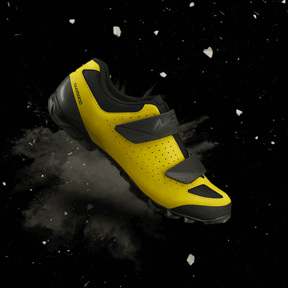
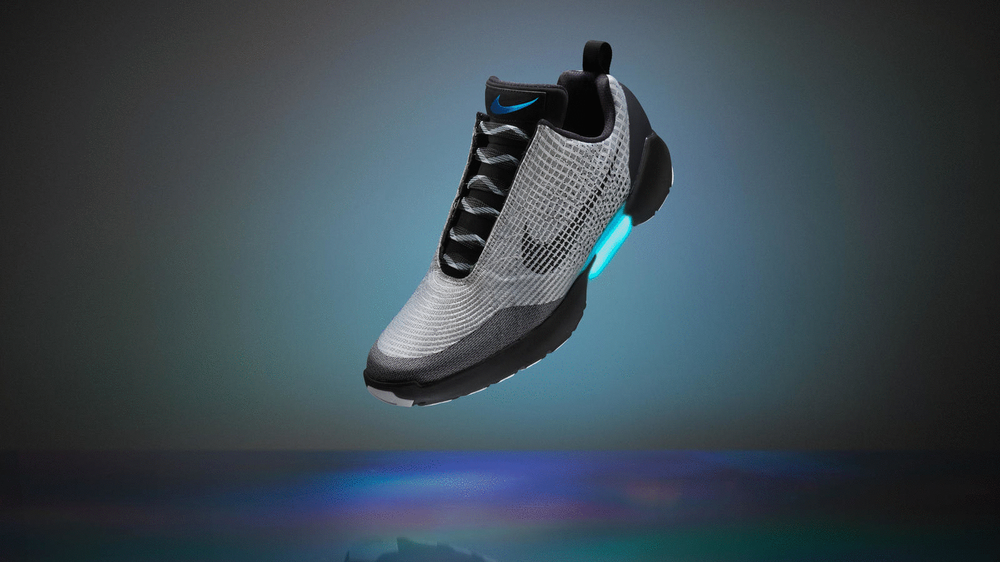

Welcome To Spange: A Social Shoe! We're a student-led start-up seeking to change how the shoe industry operates. By parterning with large footwear companies and non-profits, we're offering our customers the opportunity to purchase shoes and donate 10% of the total cost of the shoe to a certain movement -- currently, we're focusing on social justice, environmental sustainbility, and plastic pollution. We're offering cutting-edge, sleek footwear, and so if you're intersted in purchasing some new shoes and at the same time, make a difference in this world, check out some of our products!
Mission Statement: At Spange: A Social Shoe, we envision a future in which the shoe industry takes an active role in addressing societal issues, while continuing to embrace fashion. Spange looks to redefine the traditional norms of fashion, and would love your support in doing so!
Disclaimer: This is not an official business, and is merely done for a school project. No data is recieved and no product will be sent.